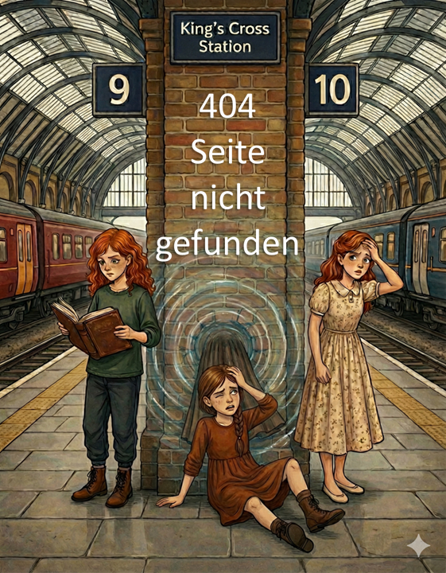

Glückwunsch!
Du hast, genau wie Ella, einen verborgenen Durchgang gefunden. Die schlechte Nachricht: Dies ist kein versteckter Bahnsteig 9¾ sondern nur eine verloren gegangene Seite, die selbst Revelio hier nicht mehr sichtbar macht.
« Nimm diesen Portschlüssel nach Hause.